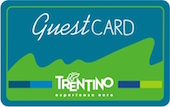

{% extends 'base.tpl.html' %}
{% block head %}{% endblock %}
{% block body %}

Guest Card
{% trans %}
Camping Punta Indiani offers gratis for all guests:
Guest Card Trentino gives you free admission to museums, castles and nature parks and to free travel throughout Trentino on the province’s public transport system for your entire holiday.
{% endtrans %}